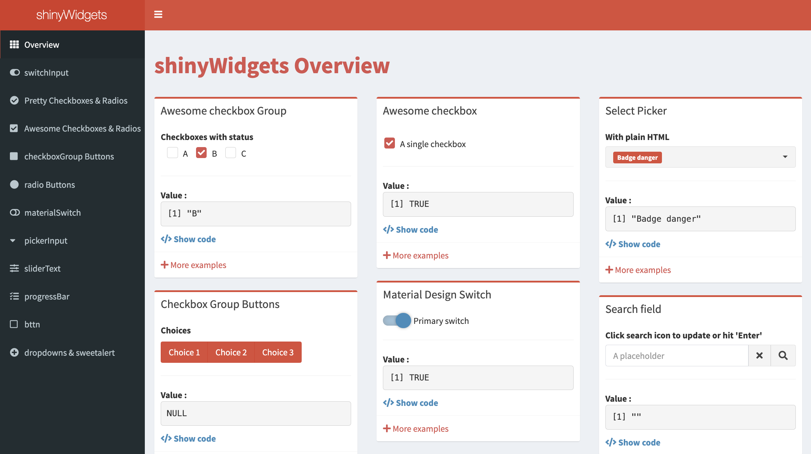

# User interface
ui <- fluidPage(
# Text area input instead of a single line
textAreaInput(inputId = "input_text",
label = "My input text"),
# The output text
textOutput(outputId = "output_text")
)
# Server
server <- function(input, output) {
# Render the text
output$output_text <- renderText({
input$input_text
})
}
# Run the app
shinyApp(ui = ui, server = server)Input functions in RShiny
R
Shiny
Input Widgets
User Interaction
This lesson explores the wide variety of input widgets available in RShiny for building interactive applications. You’ll learn how to use and customize functions such as textInput(), textAreaInput(), sliderInput(), selectInput(), radioButtons(), checkboxes and date inputs. The lesson also covers conditional panels, input validation with req() and introduces the shinyWidgets package for enhanced user interface options. Practical examples demonstrate how to add, configure and validate user inputs in your Shiny apps.
Keywords
input widgets, Shiny inputs, textInput, textAreaInput, sliderInput, selectInput, radioButtons, checkboxInput, checkboxGroupInput, dateInput, dateRangeInput, conditionalPanel, req, shinyWidgets, widget arguments, UI
Learning Objectives
In this lesson, you will:
- Create apps that accept a diverse array of Widget inputs
Widget Inputs
In the previous lesson, we introduced using the textInput() function. This function is actually a type of widget and there are many widget inputs that exist. In this next sections, we will explore some of these different input widgets.
Text box
Similar to textInput(), textAreaInput() functions in many of the same ways, but instead of having a single line where you can enter text into, it allows for multi-line input. An example of the code you would use to do that is below:
This will render an app that looks like:
Note
If you want to maintain new line character you could use verbatimTextOutput() rather than textOutput(). verbatimTextOutput() will treat the text output exactly like it is entered without any formatting.
If you would like to have some text appear by default in your app’s text area input, you can change:
# DO NOT RUN
textAreaInput(inputId = "input_text",
label = "My input text")To have a third, placeholder, argument:
# DO NOT RUN
textAreaInput(inputId = "input_text",
label = "My input text",
placeholder = "Write about anything you like here...")Adding this in creates default text to appear in the box, giving the user an example.
Sliders
Slider inputs are a great way to provide an interactive range for the user to select a value from. Below we will have the example code that one can use to create a slider input:
# User Interface
ui <- fluidPage(
# Slider input
sliderInput(inputId = "input_slider",
label = "My input slider",
min = 0,
max = 10,
value = 6),
# The text output
textOutput(outputId = "output_text")
)
# Server
server <- function(input, output) {
# Render the slider value as text
output$output_text <- renderText({
input$input_slider
})
}
# Run the app
shinyApp(ui = ui, server = server)This app would visualize like:
Note that the only line we changed was the textAreaInput() line to sliderInput(). The renderText() function has no issues handling integer or character data types. We also provided arguments to specify the minimum and maximum values and the value we would like the slider to sit at by default. There are some additional sliderInput() arguments provided in the table below:
| Argument | Description | Example |
|---|---|---|
| step | This can define the step size of the slider rather than using the default step size | step = 2 |
| pre | Allows you to add text prior the value in the slider | pre = "Sample_" |
| post | Allows you to add text after the value in the slider | post = "kg" |
| ticks | Allows you toggle tick marks on/off | ticks = FALSE |
Note
If you would like the slider to contain a range of values, then you would need to use a vector within the value option like value = c(2,6) where the first value is the default “from” position in the range and the second value is the default “to” value in the range.
Dropdown
Oftentimes when you are working with input data, you would like to select some of your data from a list of options. One way of doing this is to have a dropdown list of options and selectInput() is the function you would use to accomplish this. For this function, the additonal argument choices is used to specify all the options in the dropdown.
# User interface
ui <- fluidPage(
# Dropdown select menu of options
selectInput(inputId = "input_select",
label = "My favorite game",
choices = c("Pick a game" = "", "Catan", "Carcassonne", "Caverna", "Twillight Imperium")),
# The output text
textOutput(outputId = "output_text")
)
# Server
server <- function(input, output) {
# Render the selection from the dropdown menu as text
output$output_text <- renderText({
input$input_select
})
}
# Run the app
shinyApp(ui = ui, server = server)
Note
Within the choices argument, you can see that we made a placeholder value in the first position, "Pick a game" = "", and this visualizes as the default placeholder. Otherwise, the placeholder will default to the first element in the choice vector.
Some additional arguments for selectInput() are provided below:
| Argument | Description | Example |
|---|---|---|
| multiple | Allows you to select multiple options from the selection dropdown menu | multiple = TRUE |
| selected | Allows you to define the default selection, otherwise the default selection will be the first item in the list, unless the multiple arugment is TRUE, then it will default to no selection |
selected = "Twillight Imperium" |
Note
You can alternatively use selectizeInput() instead of selectInput() to have more control over the dropdown. While this is outside of the scope of this lesson, the documentation for this can be found here.
Checkboxes
The are two styles of checkboxes that you can choose from. A single checkbox (checkboxInput()) that will return the values of TRUE and FALSE and also a group of checkboxes (checkboxGroupInput()) where you can select multiple items from.
checkboxInput
If we want a single checkbox to toggle then we can use checkboxInput(). An example is below:
# User interface
ui <- fluidPage(
# Checkbox for the user to toggle
checkboxInput(inputId = "checkbox_input",
label = "Apply Benjamini–Hochberg correction",
value = TRUE),
# The output text
textOutput(outputId = "output_text")
)
# Server
server <- function(input, output) {
# Render the checkboxes TRUE/FALSE value as text
output$output_text <- renderText({
input$checkbox_input
})
}
# Run the app
shinyApp(ui = ui, server = server)This would visualize like:
An additional argument that you might want to use with checkboxInput() is:
| Argument | Description | Example |
|---|---|---|
| value | Allows you set the default to be equal to TRUE or FALSE |
value = TRUE |
checkboxGroupInput
Similar to radio buttons, Shiny apps can provide checkboxes for users to utilize. This can be particularly useful if you would like the users to be able to select multiple options. Let’s look at an example code for this:
# User Interface
ui <- fluidPage(
# Multiple checkbox options
checkboxGroupInput(inputId = "checkbox_input",
label = "Which fruits do you like?",
choices = c("Orange", "Strawberry", "Apple", "Pinnapple")),
# The output text
textOutput(outputId = "output_text")
)
# Server
server <- function(input, output) {
# Render the TRUE checkbox selections as text
output$output_text <- renderText({
input$checkbox_input
})
}
# Run the app
shinyApp(ui = ui, server = server)This would visualize like:
Additional arguments that you might want to use with checkboxGroupInput() are:
| Argument | Description | Example |
|---|---|---|
| inline | Allows you to display the checkboxes horizontally rather than vertically | inline = TRUE |
| selected | Allows you to define the default selection, otherwise the default selection will be nothing checked. You can also have multiple selected options by putting the selected options into a vector | selected = "Strawberry" or selected = c("Strawberry", "Pinnapple") |
Dates
The input widget for dates allows you to select a specific date from a dropdown calendar. There are two functions that allow you to do this:
dateInput(): Selecting a single datedateRangeInput(): Selecting a range of dates
Single date
When selecting a single date from a calendar, we can use the dateInput() function. An example is below:
# User interface
ui <- fluidPage(
# A dropdown calendar to select a date
dateInput(inputId = "date_input",
label = "When is this project due?"),
# The output text
textOutput(outputId = "output_text")
)
# Server
server <- function(input, output) {
# Render the date as text
output$output_text <- renderText({
as.character(input$date_input)
})
}
# Run the app
shinyApp(ui = ui, server = server)
Note
We have had to add the as.character() function around input$date_input otherwise it will return the time in Unix Epoch format.
This would visualize like:
Additional arguments that you might want to use with dateInput() are:
| Argument | Description | Example |
|---|---|---|
| value | Allows you to set the default day to open the calendar on. If not set, then it will default to the current day in yyyy-mm-dd format | value = “2024-07-24” |
| min | Allows you to set the earliest date that can be selected | min = "2024-07-20" |
| max | Allows you to set the latest date that can be selected | max = "2024-07-28" |
| weekstart | Allows you to select which day of the week the calendar should start on with Sunday being 0 and incrementing to Saturday being 6 | weekstart = 1 |
| language | Allows you to set the language for the calendar | language = "de" |
| daysofweekdisabled | Allows you to make certain days of the week unavailible for selection with Sunday being 0 and incrementing to Saturday being 6. You can also make a vector of values to block out multiple days of the week. | daysofweekdisabled = c(0,6) |
Date Range
You can also collect a date range using Shiny. An example of this is below:
# User interface
ui <- fluidPage(
# Select a range of dates from the dropdown calendar
dateRangeInput(inputId = "date_input",
label = "When is your vacation?"),
# The output text
textOutput(outputId = "output_text")
)
# Server
server <- function(input, output) {
# Render the date range from the calendar selection as text
output$output_text <- renderText({
as.character(input$date_input)
})
}
# Run the app
shinyApp(ui = ui, server = server)This would look like:
The same additional arguments that were used with dateInput() also apply here.
In this exercise, you will use the input widgets presented above and the associate code to create your own RShiny app! It will take numeric input from a select dropdown menu, radio button and slider and then multiply the values together and return the product. Let’s break this down into a few parts:
Create the user interface for the app that allows the user to select the values 1-3 from a
selectInput()function, the values 4-6 from aradioButtons()function and the values 7-9 from asliderInput().In the user interface create a place for the output text for the product of these values to appear.
Create a server for the app that multiples the three input values together and renders their product as text. Hint: You will need to wrap each input in a
as.numeric()function.Put the parts together and run the app.
Conditional Panel
Suppose you want some input appearing to be conditional on another input’s value. This is a good place to utilize the conditionalPanel() function. The general syntax for using conditionalPanel() is:
# DO NOT RUN
conditionalPanel(
condition = "input.<variable_name> == '<value>'",
<what_to_appear_if_the_condition_is_true>
)Below is an example of using the conditionalPanel(). In this example, the user selects ‘Yes’ or ‘No’, and if they select ‘Yes’, then they are prompted to select from a list of courses that they have taken. If they select ‘No’, there is nothing further.
# User interface
ui <- fluidPage(
# Select a value of "Yes" or "No" from a select dropdown menu
selectInput(inputId = "select_input",
label = "Have you taken a Current Topics in Bioinformatics module with us before?",
choices = c("Please Answer" = "", "Yes", "No")),
# Have a conditional panel
conditionalPanel(
# If the value of "select_input" is "Yes"
condition = "input.select_input == 'Yes'",
# Then, inquire as to which courses have they taken with a second select dropdown menu
selectInput(inputId = "select_courses",
label = "Which courses have you taken?",
choices = c("R Basics", "Shell basics", "Advanced shell"),
multiple = TRUE)
),
# The output text of courses taken
textOutput(outputId = "courses")
)
# Server
server <- function(input, output) {
# Render the selection(s) of course(s) taken as text
output$courses <- renderText({
input$select_courses
})
}
# Run the app
shinyApp(ui = ui, server = server)
Note
When using boolean values with conditional panels, the ‘<value>’ is 0 for FALSE and 1 for TRUE. Entering the boolean values TRUE or FALSE for these values will not work.
This would look like:
Required Input
We may have situation in which the app requires input in order for later code to be evaluated. We can actually see an example of this in the previous app. If you still have the previous app open, select “Yes”, then select a course of your choosing. Next, change the input to “No”. You’ll see that the course selections we’ve made are still present!
If we didn’t want this type of contradiction (i.e if they select “No” then there should not be any course selections present), then one way that we could resolve this is with the use of the req() function.
Let’s look at an example of the req(). On the UI side, nothing has changed. However, on the server side we have placed the req() function inside of renderText(), which tells Shiny that we are requiring input$select_input to be match to “Yes” in order to have the input$select_courses text rendered.
# User interface
ui <- fluidPage(
# Select a value of "Yes" or "No" from a select dropdown menu
selectInput(inputId = "select_input",
label = "Have you taken a Current Topics in Bioinformatics module with us before?",
choices = c("Please Answer" = "", "Yes", "No")),
# Have a conditional panel
conditionalPanel(
# If the value of "select_input" is "Yes"
condition = "input.select_input == 'Yes'",
# Then, inquire as to which courses have they taken with a second select dropdown menu
selectInput(inputId = "select_courses",
label = "Which courses have you taken?",
choices = c("R Basics", "Shell basics", "Advanced shell"),
multiple = TRUE)
),
# The output text of courses taken
textOutput(outputId = "courses")
)
# Server
server <- function(input, output) {
# Render the selection(s) of course(s) taken as text
output$courses <- renderText({
# Require the the select input to the first question match "Yes" in order to evaluate this renderText() function
req(input$select_input == "Yes")
input$select_courses
})
}
# Run the app
shinyApp(ui = ui, server = server)Test out the app with the “Yes” and “No” options and see how it differs from before!
shinyWidgets
We have only scratched the surface of widgets for RShiny! There is so much more you can do, and we encourage you to delve deeper and explore added functionality.
Also, to enhance the widget inputs, shinyWidgets is an R package that you can install that gives you even more stylistic options for your Shiny app. The gallery of input widgets that you can create using shinyWidgets can be found here. A useful part of the gallery is that each input widget displayed has a </> Show code section that gives you the code needed to create the input widget on the UI side.

This lesson has been developed by members of the teaching team at the Harvard Chan Bioinformatics Core (HBC). These are open access materials distributed under the terms of the Creative Commons Attribution license (CC BY 4.0), which permits unrestricted use, distribution, and reproduction in any medium, provided the original author and source are credited.
Reuse
CC-BY-4.0